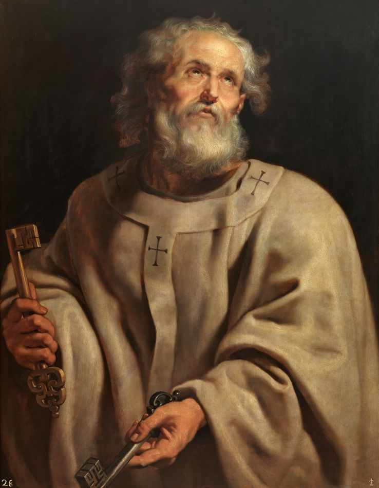

Entenda a trajetória de Simão Pedro, a quem Jesus confiou as chaves do Reino dos Céus e a missão de apascentar Suas ovelhas.
Começar Estudo
Um pescador impulsivo? O apóstolo que negou a Cristo? O primeiro Papa? A vida de São Pedro é um testemunho profundo da misericórdia divina e da forma como Deus escolhe os fracos para confundir os fortes.
Neste curso, faremos uma defesa bíblica e histórica do Papado. Passaremos pelo chamado no Mar da Galileia, a confissão em Cesareia de Filipe, suas lágrimas de arrependimento, até chegar à fundação da Igreja em Roma e o seu martírio. Fundamental para a apologia católica.
O chamado de Simão, seu temperamento e os primeiros passos seguindo o Mestre.
A análise exegética de Mateus 16:18 e a instituição do primado petrino.
A negação durante a Paixão e o triplo perdão nas margens do mar de Tiberíades.
A liderança de Pedro em Atos dos Apóstolos, a Igreja Primitiva e o martírio em Roma.